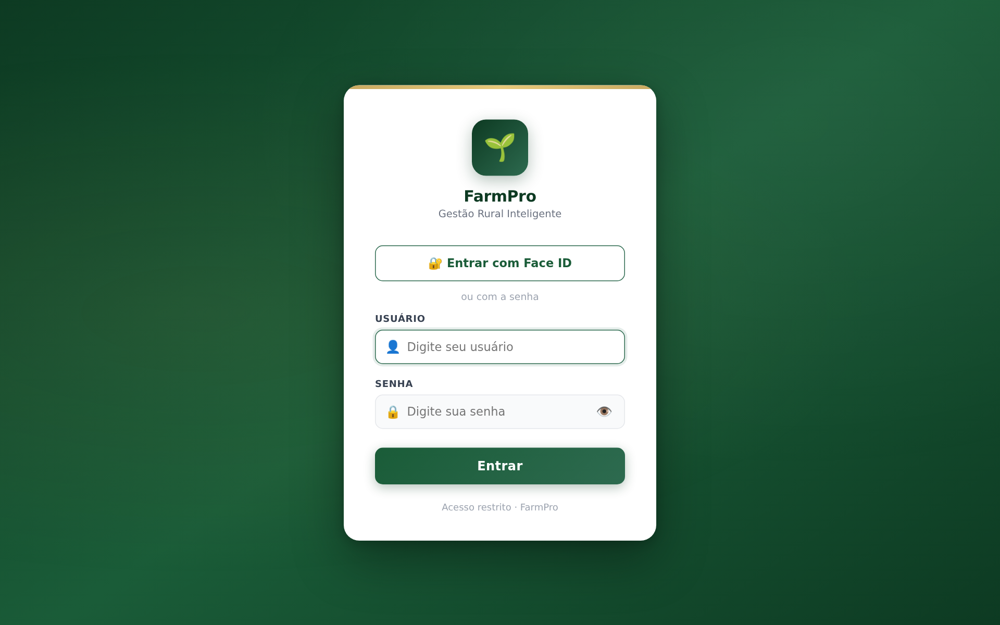
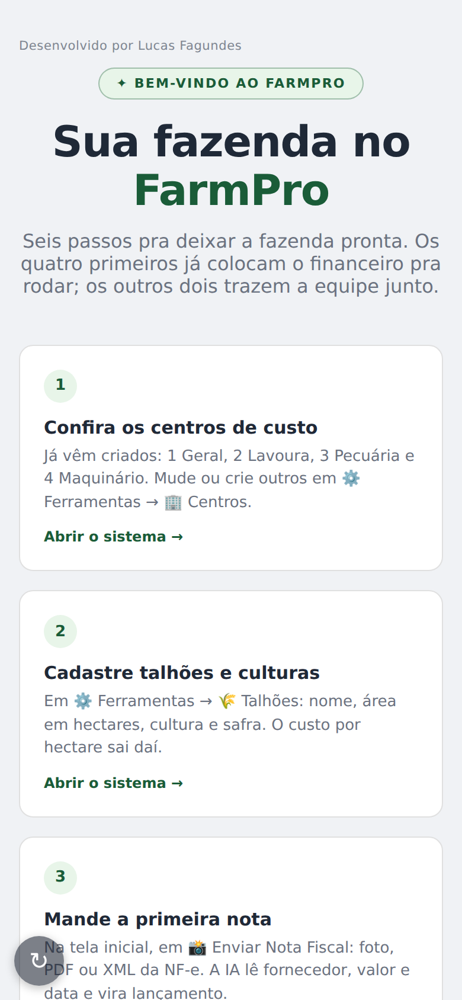
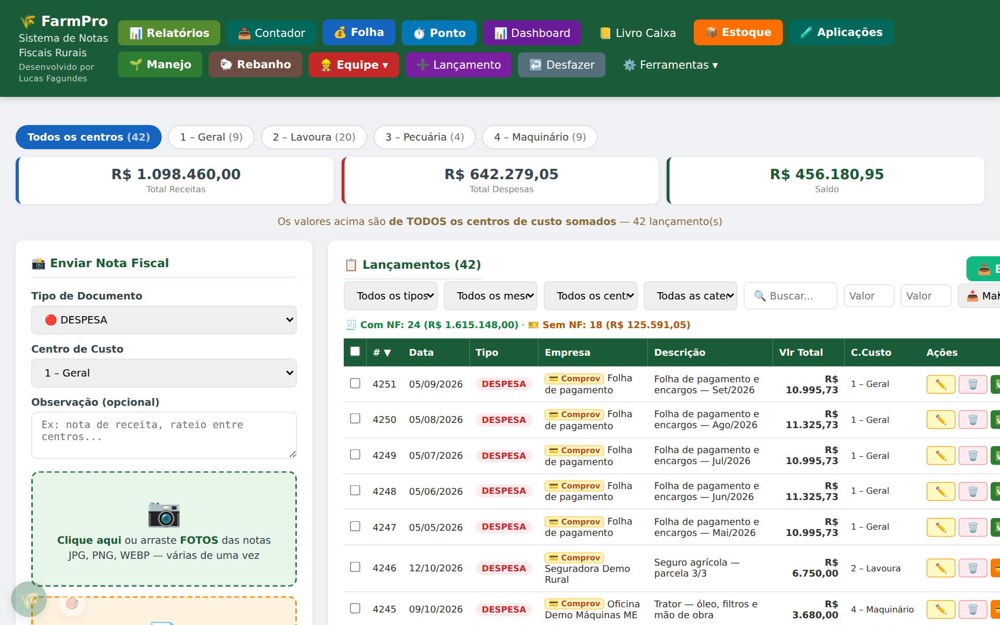
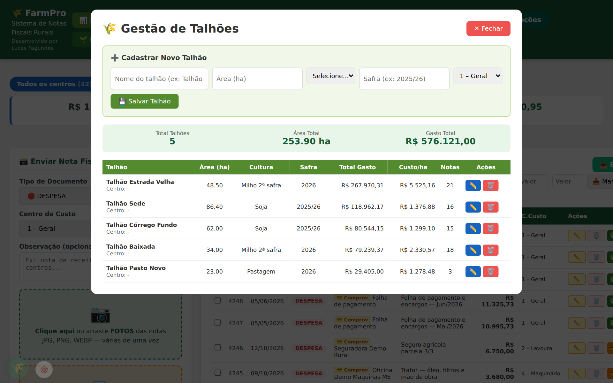
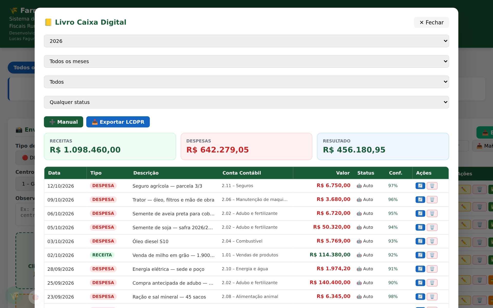
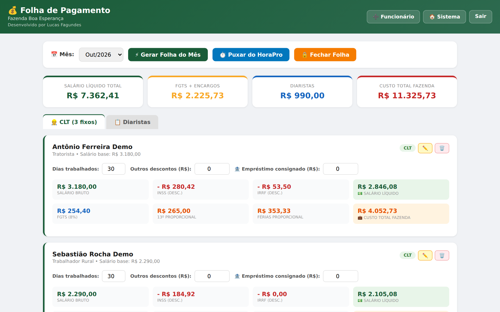
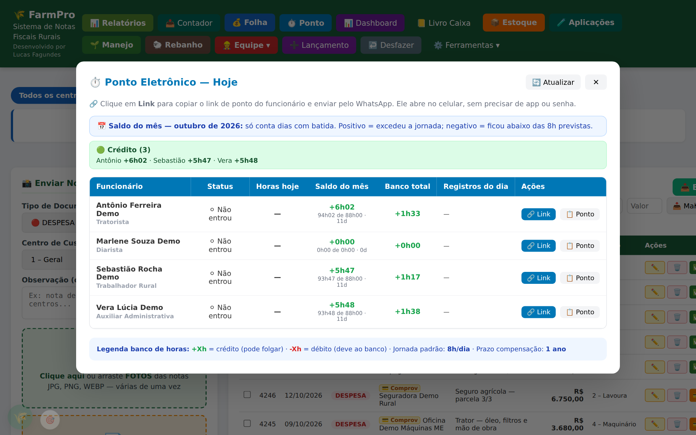
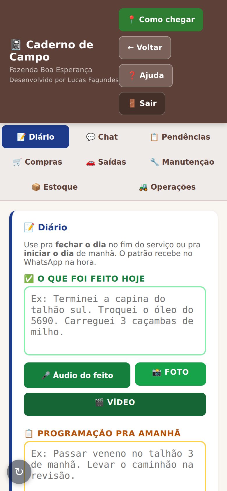
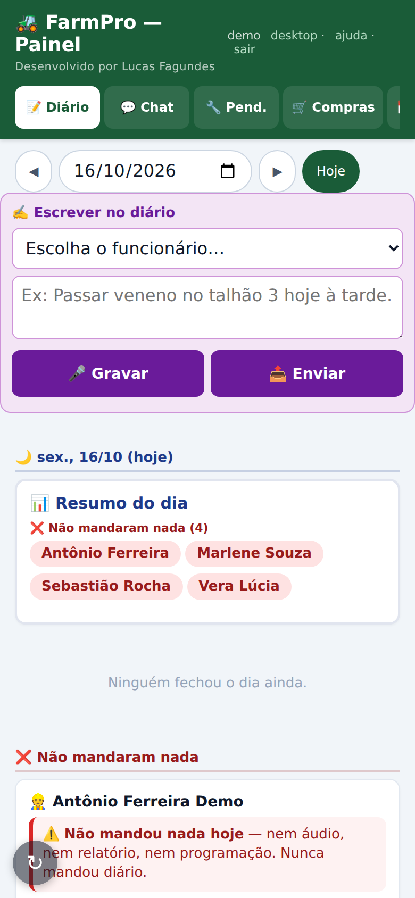

Do primeiro acesso até a fazenda rodando: notas, lançamentos, centros de custo, folha, ponto e o caderno de campo da equipe.
No navegador do celular ou do computador: farmpro.luqsys.com.br
Se você criou a conta pelo teste grátis, o usuário é o seu e-mail.
Chame o suporte no WhatsApp (45) 99107-7788 e a gente libera uma nova. Pra trocar depois: ⚙️ Ferramentas → 👥 Usuários → Editar no seu nome.
Abra farmpro.luqsys.com.br/instalar no celular e siga o passo a passo do iPhone ou do Android. São 3 ícones: FarmPro (sistema completo), Resumo (painel do dia) e Conferir (fila do BankPro).
Já logado no celular, toque em ⚙️ Ferramentas → 🔐 Ativar Face ID. Da próxima vez, entre sem digitar a senha.

No primeiro acesso o sistema abre a tela de boas-vindas, com 6 passos. Os 4 primeiros colocam o financeiro pra rodar:
Já vêm 4 criados: 1 Geral, 2 Lavoura, 3 Pecuária e 4 Maquinário. Mude em ⚙️ Ferramentas → 🏢 Centros.
Nome, área em hectares, cultura e safra. O custo por hectare sai daí.
Foto, PDF ou XML da NF-e na tela inicial.
➕ Lançamento, e 🔄 Recorrentes pro que se repete todo mês.
Na 💰 Folha: CLT e diaristas.
Um login de funcionário pra cada um (👥 Usuários) e o app instalado.
Depois toque em Tudo certo, ir pro sistema →. Dá pra rever esses passos pela Ajuda.

A tela inicial tem os totais (receitas, despesas e saldo), o envio de notas à esquerda e a lista de lançamentos à direita. Os botões acima dos totais filtram por centro de custo.

➕ Lançamento: empresa, descrição e valor (obrigatórios), forma de pagamento, centro, talhão, cultura e categoria. Pra diarista, frete, conta de luz.
| Botões da linha | ✏️ editar · 🗑️ apagar · 💳 marcar pago (vira ✅) · 📋 duplicar · 📎 anexos |
| Status fiscal | 🧾 Com NF (entra na contabilidade), 🎫 Sem NF (ticket, recibo) ou ❓ Indefinido. |
| Subcategoria | Opcional. Use o nome do maquinário pra ver quanto cada trator gastou. |
| Recorrentes | ⚙️ Ferramentas → 🔄 Recorrentes. Avisa quando um gasto de todo mês ficou em branco. |
| Alertas | ⚙️ Ferramentas → 🔔 Alertas: limite em R$ por categoria e centro, no mês. |
Em ⚙️ Ferramentas → 🌾 Talhões: nome, área, cultura, safra e centro. Ao lançar, escolha o talhão. A tela mostra o gasto total, o custo por hectare e quantas notas cada talhão tem.

Receitas, despesas e resultado do ano ou do mês, com a conta contábil de cada lançamento. A IA classifica sozinha depois de cada nota; você reclassifica ou lança à mão em ➕ Manual. 📥 Exportar LCDPR pede CPF, nome, propriedade e NIRF e baixa o TXT do ano. Confira com o contador antes de entregar.

➕ Funcionário (CLT ou diarista fixo), depois ⚡ Gerar Folha do Mês. O sistema calcula INSS, IRRF, FGTS, 13º e férias proporcionais e o custo total. 🔒 Fechar Folha lança o mês como despesa. É uma ajuda: confira com o contador.

No 🔗 Link de cada funcionário você copia o link do ponto e manda pelo WhatsApp. Ele abre no celular, sem app e sem senha, e bate entrada, almoço, volta e saída com selfie e localização. A tela mostra horas do dia, saldo do mês e banco de horas.

Em ⚙️ Ferramentas → 👥 Usuários, crie um login com perfil Funcionário. Ele entra direto no Caderno de Campo e não vê o financeiro.
| 📝 Diário | O que foi feito hoje e a programação de amanhã, por texto, áudio (vira texto), foto ou vídeo. |
| 📋 Pendências · 🛒 Compras | O que precisa fazer ou comprar. |
| 🚗 Saídas | Retirada e devolução de veículo ou máquina, com km e fotos. |
| 🔧 Manutenção | Serviço na máquina, medidor, litros, valor e fotos. |
| 📦 Estoque · 🚜 Operações | Saldo dos insumos; aplicação, plantio e colheita. |


O diário de cada funcionário, quem não mandou nada hoje, pendências, compras, estoque, manutenção, ponto e saídas. Você também escreve no diário de um funcionário (texto ou áudio) e ele vê no caderno com o seu nome.
No computador, o mesmo fica em 👷 Equipe ▾ → 📋 Pendências, Compras, Diário & Caderno e 💬 Chat com funcionários.
| 📦 Estoque | Produto, entrada, saída e ajuste de inventário. Mostra saldo, valor em estoque e o que está abaixo do mínimo. |
| 🧪 Aplicações | Custo por talhão e por alqueire e sobra de produto, a partir das aplicações do caderno. O custo operacional é uma estimativa e não vira despesa. |
| 🌱 Manejo | Assistente que lê o caderno da fazenda e responde perguntas, mais avaliações de campo, anotações e ensaios. |
| 🐑 Rebanho | Contagem inicial, nascimento, compra, venda, abate e morte, por espécie. |
| 📄 Documentos | ART, NR, licenças e certificados, com vencimento. Filtra os que vencem em 30 dias. |
| 🚜 FieldView | Importa a exportação do FieldView (CSV) como aplicação, plantio ou colheita. |
| 🧾 NF de devolução | Precisa de conta na Focus NFe com o certificado do produtor, configurada pelo suporte. |
| 👨👩 Grupo familiar | Família que divide a fazenda mas declara separado: cada um com seu livro caixa, e "Ver fazenda inteira" soma tudo no Dashboard. |
| 📊 Relatórios | Filtros por período, tipo, categoria, centro, forma de pagamento. Imprimir ou Exportar Excel. |
| 📊 Dashboard | Despesas por categoria e por centro, evolução mês a mês e os 10 maiores fornecedores. |
| 📤 Contador | Escolha o período e digite o e-mail do contador: ele recebe PDF e planilha Excel. |